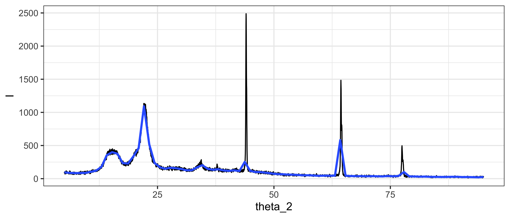
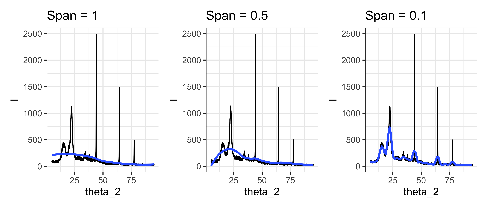

6.2 Smoothing
Smoothing é uma operação usada tanto para diminuir ruído de dados obtidos experimentalmente quanto para buscar observar tendências gerais do relacionamento entre variáveis.
Em geral para suavizar os dados é usado o método de moving average, também chamado de rolling average onde é calculada a média de pontos adjacentes para que o ruído dos dados fique menos proeminente.
No R, através das funções do ggplot2 pode ser usado o geom_smooth() para se obter curvas com perfil “suavizado”, ou smoothed.
Vamos usar o exemplo de uma análise de difração de raios x.
# lê os dados no arquivo DRX.txt na pasta dados
df <- read_table("dados/DRX.txt",
# pula as 30 primeiras linhas do arquivo que contém informações não necessárias
skip = 30) %>%
# seleciona colunas <2Theta> e <I> e as renomeia
select("theta_2" = `<2Theta>`, "I" = `I >`)Parsed with column specification:
cols(
`<2Theta>` = col_double(),
`<` = col_logical(),
`I >` = col_double()
)- Primeiro importamos os dados usando a função
read_table(). - O argumento
skip = 30serve para indicar que as 30 primeiras linhas do arquivo devem ser ignoradas porque não contém os dados de interesse e sim outras informações da amostra e da análise. - A função
select()é usada para selecionar apenas as colunas de interesse e simultaneamente renomear as coluna selecionadas.
obs. No arquivo de texto original as colunas estão separadas por espaços em branco e por isso se usa a função
read_table()porém para a coluna de intensidade (<I>) há espaçoes desnecessários entre o<eI, o que causa a má interpretação do texto portanto foi necessário especificar o nome da coluna exatamente como foi lido pela funçãoread_table().
Agora para fazer o gráfico usamos o ggplot2:
p <- ggplot(df,
aes(
x = theta_2,
y = I
)
) +
geom_line() +
theme_bw()
p + geom_smooth(method = "loess", span = 0.01, se = FALSE) 
O método loess significa que o calculo feito é uma regressão local entre a fração de pontos especificada pelo argumento span.
Quanto menor o span maior será a “resolução” da curva suavizada.
Abaixo a comparação:
span1 <- p + geom_smooth(method = "loess", span = 1, se = FALSE) +
ggtitle("Span = 1")
span05 <- p + geom_smooth(method = "loess", span = 0.5, se = FALSE) +
ggtitle("Span = 0.5")
span01 <- p + geom_smooth(method = "loess", span = 0.1, se = FALSE) +
ggtitle("Span = 0.1")
span1 + span05 + span01
Mesmo assim com esse span pequeno perde-se muito a resolução dos dados então a melhor solução é usar o pacote tidyquant que tem um geom específico para criar gráficos com moving average.
O geom que o pacote tidyquant providencia é um geom que gera os dados do moving average direto no gráfico, sem necessidade de modificar os dados originais.
O principal argumento que o geom_ma() usa neste caso é o n.
n é o número de pontos adjacentes que serão usados para calcular a média, logo quanto maior o n mais suave será a curva.
O efeito colateral esperado é que os picos percam um pouco de definição porém o resultado é muito melhor do que o que o geom_smooth() gera.
Abaixo a comparação:
library(tidyquant)
span001 <- p + geom_smooth(method = "loess", span = 0.01, se = FALSE) +
ggtitle("Span = 0.01")
n5 <- p + geom_ma(n = 5, linetype = "solid", size = 1) +
ggtitle("n = 5")
n10 <- p + geom_ma(n = 10, linetype = "solid", size = 1) +
ggtitle("n = 10")
span001 + n5 + n10
Outra forma de fazer o mesmo seria criar um novo dataframe com os dados da mobing average e plotá-los usando os geoms do ggplot depende do usuário definir qual a melhor forma de tratar os dados.